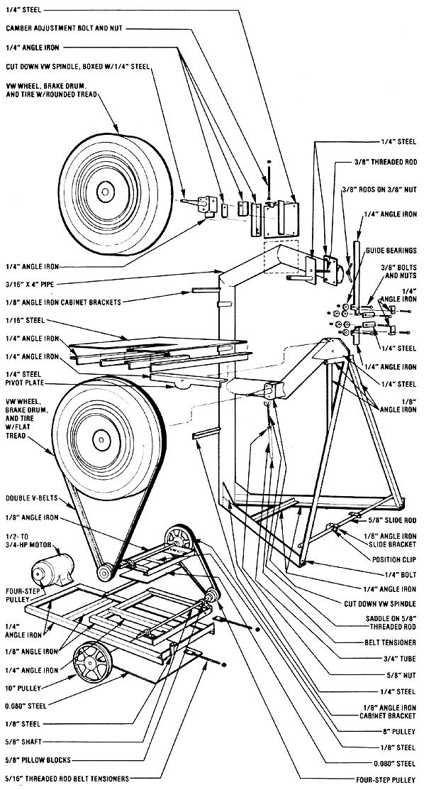

A $100 Industrial-Quality Band Saw
By Gene Lemle
November/December 1983
You can make this important addition to any workshop . . . and do so on a recycler's budget.
Without a doubt, the handiest, most accurate tool for cutting straight lines or curves in wood or metal is the band saw. Unfortunately, the cost of one of these fine tools is much too expensive for many home crafts people. For example, when I finally decided I couldn't do without one any longer, a model with a 12" throat (able to accept material 12" wide) and metal-cutting speed reduction was going for $500 at Sears, Roebuck and Company. Oh, I did manage to find one 12" model made out of plastic for only $150, but a close inspection showed me that the low-grade machine really wasn't any more than a toy and wouldn't be able to handle metal cutting or any serious woodcutting. At that point, I decided that I was simply going to have to design and build my own band saw.
The tool I ended up with has proved itself capable of cutting wood or metal as easily as do many industrial models I've seen. It has a full 24" throat . . . an upper blade guide that can be adjusted to accommodate material 7" thick . . . and a worktable that tilts to 45 ° for angled cuts. What's more, eight speeds are available (a quick-change system makes it possible to switch blades and speeds in less than three minutes), and its 148 "-long blade will outlast those found on smaller band saws.
Although all of the machine work required to build this quality saw could be done with an electric drill and a hacksaw, a cutting torch will make the trimming easier and quicker. In any event, the metal parts do have to be welded together, so-at some point-you'll either have to supply your own fusing equipment and expertise or find someone to do that job for you. (One good source of welding help is a local high school vocational department. The people at such facilities are often desperate to work on stimulating, functional projects.)
I've never believed in skimping on quality, so all of the parts in my saw are made of the finest materials . .. acquired locally from a steel recycling center and an auto salvage yard. The angle iron and sheet steel were end pieces from larger chunks of material. Such small bits aren't saved by manufacturing shops but are ideal for home shop projects. Therefore, a little searching should turn up a good supply of these odds and ends, and the can't-be-beat price should be the yard's rate per pound of scrap.
The heart of this (or any) band saw is the wheels that the blade rolls on. Mine came from a local auto junkyard, in the form of two spindles (with bearings), two wheels, and a pair of bald tires . . . all from Germany's finest, the Volkswagen Beetle. Should your recycling tendencies show a streak of nationalism, you could use other brands of wheels: I chose the VW units because of their large diameter and narrow width. Whatever your preference in resurrected road runners, pick one tire that's fairly bald with a rounded tread for the saw's upper wheel and one that's worn flat (and, again, mostly bald) for the lower unit. Both types of tires ought to be abundant at the junkyard, and will be sure to be low-priced. These high-quality wheel assemblies should last a lifetime on a band saw, too, since there will be almost no load on them (compared with that of hauling the VW around).
My saw's frame is made from 4" steel tubing (3/16"-wall thickness), which I also purchased at the recycling center. I laid out the design on the garage floor with chalk, and then cut and welded the tubing to match that shape. The wheels are mounted to the tubular frame with 1/4"-steel-plate and angle iron assemblies that are, in turn, welded to the cut-down VW spindles. The lower unit consists of just two side plates, but the upper section incorporates a sliding holder with a tension bolt, to allow the blade to be adjusted . . . or just loosened for changing. In addition, the upper wheel mount plate also incorporates a camber adjustment bolt, which-by altering the wheel's tilt-allows the blade's position relative to the guide bearing to be changed.
The triangulated base for the frame is built from I/4" X 2" X 2" angle iron, with gusset plates between the upright tube and the two angle irons extending from it. Angle iron measuring 1/8" X 1 " X 1 " connects the corners of the triangular base to the frame tube at a point near the underside of the worktable to provide additional rigidity. The work surface itself consists of I/16" sheet steel that was tack-welded to a framework of 1/4" X 2" X 2" angle iron. This table pivots from a semicircle of 1/4" steel welded to one of its supports.
I salvaged a 1/4-HP (1,725 RPM) electric motor from a junked washing machine to power my band saw. (Since clothes washers seldom expire from motor failure, they're an excellent source of these devices.) This small power source is suitable for the light to medium work with wood or metal that I do, but if you plan to tackle some really big jobs with the saw, you'd do better to install a 3/4to 1-HP motor.
To achieve the necessary speed reduction for cutting metal or wood, the saw driver is equipped with a four-step pulley, and I fit two jack shafts (one of which also has a four way pulley) parallel to it. To cut wood, the motor can be linked directly to the lower tire with a V-belt from one of its four grooves. This setup provides four different high-speed settings. When I wish to cut metal, I route the motor's belt to the far jack shaft-which is mounted on two pillow block bearing sand slide the whole motor mounting board over to center the drive pulley from the other jack shaft below the lower tire (see Photo 2). Thus, 16 ratios are available in the slow-speed mode. To keep the proper tension on the drive belt at all times, a threaded rod runs down from the frame to the motor-mount plate. (The motor-mount plate slides and pivots on a rod at the front of the frame so the tension can be changed easily.)
Both the upper and lower guide assemblies are mounted on 1/4" X 2" X 2" angle iron and are made up of pairs of ball bearings. The side guides are fully adjustable to allow blades of a range of sizes to be used on the saw, while the bearings that run against the back of the blade are fixed to their 1/4" X 2" X 2" angle iron brackets. In addition, the entire upper guide can be slid up or down to accommodate material of different thick nesses.
The combination blade guard and cabinet that encloses the working parts of my band saw was built from one sheet of 1/4" plywood. I think the varnished wood is a good deal more attractive than is a conventional plastic or metal case . . . and the resilient material absorbs sound quite well, too.
My recycled-parts band saw has already given me three years of faithful service, and I can see no reason why it won't be standing ready to handle the work at hand for as long as I'm able to use it. The 24"-diameter VW wheels give the blade tremendous surface contact, which helps prevent slippage . . . and the large wheels also reduce fatigue on the blade (since that cutter need not make as sharp a turn as one on a conventional band saw does). In short, it's far superior to any commercial saw I could afford then or now. And when I add up the high quality of this machine, the crinkle of all the dollars I saved, and the glow of making it myself, I figure I came out way ahead on this project . . . no matter how you cut it!
EDITOR'S NOTE: Gene Lemle has prepared a thorough set of plans for building his ingenious band saw, which he's offering for $10 per set. They include a materials list-the parts cost about $100-seven detailed draw ings, and written instructions. We feel certain that Gene's plans are bound to save most builders more than their cost in time and aggravation. To order a set, send $10 to Lemle Products, Dept. TMEN, 1036 Eton Road, Toledo, Ohio 43615. Mr. Lemle is also willing to supply parts or a complete saw. You can inquire about prices for these items by sending him a self-addressed, stamped envelope.
 [1]The band saw's plywood housing swings away to allow servicing of the components inside. [2] In this photo of the variable- speed drive mechanism, the motor belt is routed to the jack shaft for low speed metal cutting. [3] Ad just able bearings position and support the blade. [4] This homemade band saw is able to handle material of much greater thickness than can most commercial models. |
 |
|